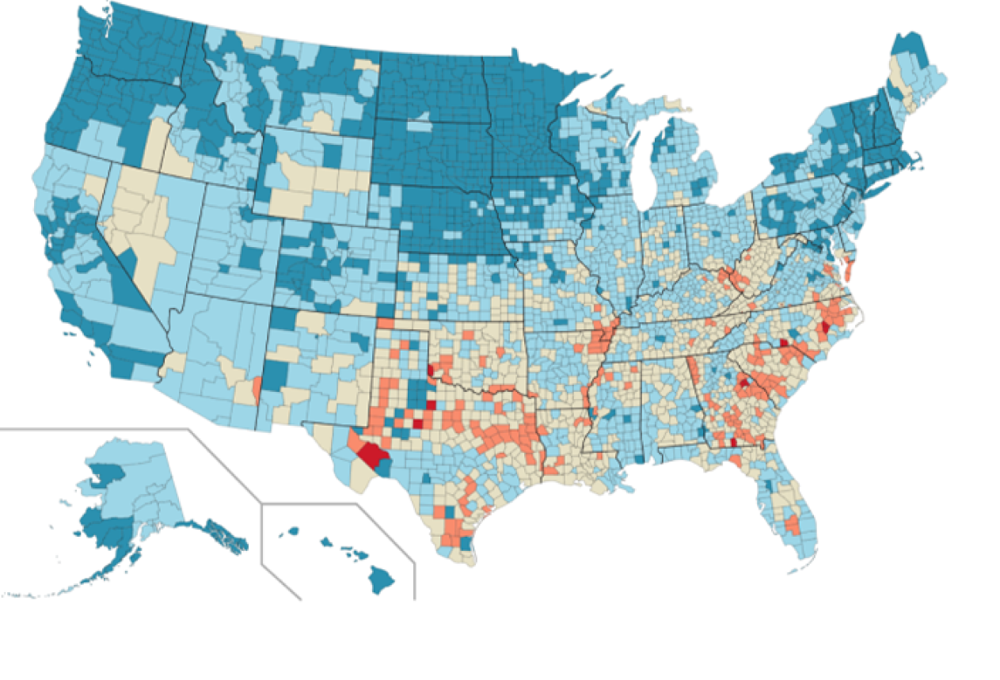
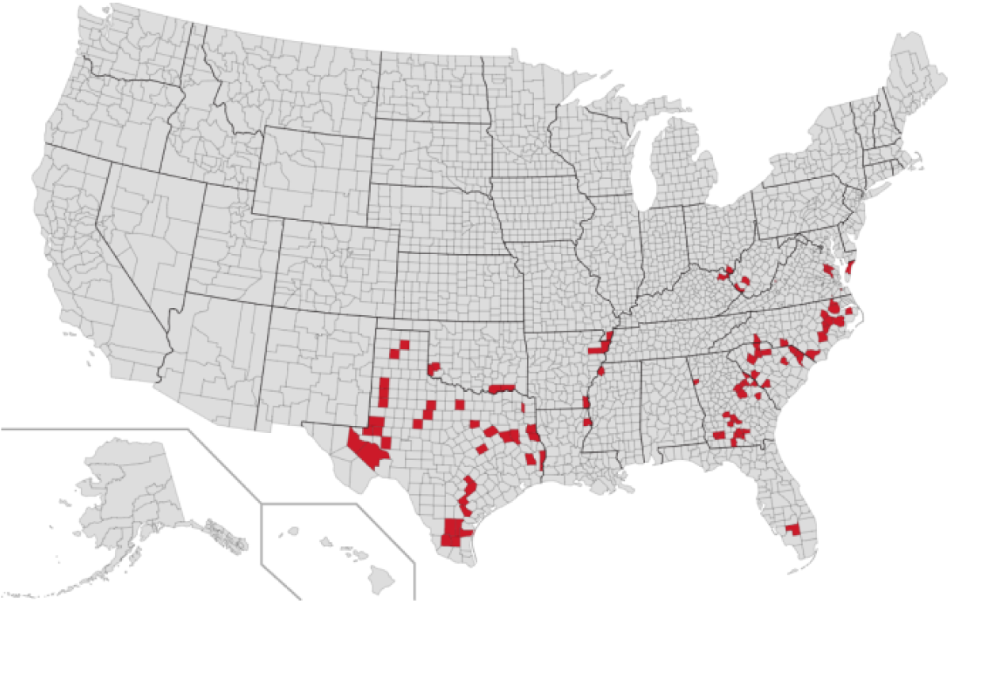

Where is Medical Debt in America?
The share of people with medical bills in collections is highest in the South.
All US Counties
100 Counties With Highest Debt Levels
All US Counties

100 Counties With Highest Debt Levels

Under 10%
10 - 19%
20-29%
Over 30%
Over 40%